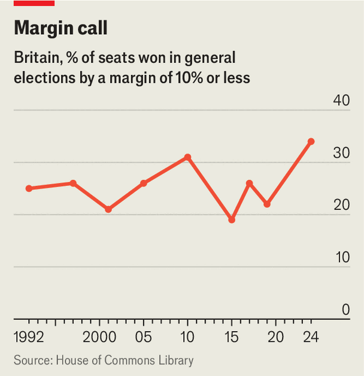

Can Andy Burnham keep his own MPs under control?
Britain’s prime-minister-to-be faces a big task to maintain his authority
July 16th 2026
“I keep the troops in line. I put a bit of stick about. I make ’em jump.” Francis Urquhart, anti-hero of the 1990s BBC thriller “House of Cards”, embodies the popular perception of Westminster “whipping” as a brutal way for governments to force their will on MPs. In the series he rises from chief whip to prime minister through lies, manipulation and, eventually, murder.
The more pedestrian reality is that the whips use a mix of cajoling and threats to keep party discipline. But during his time as prime minister, Sir Keir Starmer gave the impression that he sympathised with the Urquhart method. Members of the whips’ office showed little tolerance of dissent; 13 backbenchers were ejected from the parliamentary party, at least temporarily, because they opposed Sir Keir’s policies.
It did not work. For all his policy failures and unpopularity with voters, the reason Sir Keir is leaving office on July 20th is that he lost the confidence of his own MPs. The enormous majority he won in the 2024 general election was largely squandered: his attempts to force through contentious policies, such as cuts to benefits, through coercion rather than persuasion resulted in embarrassing climbdowns.
Andy Burnham, who will replace Sir Keir as prime minister, has promised to take a different approach. In the run-up to the Labour leadership contest, in which he was the only candidate, he was coy about his policy plans but open about the need to make MPs feel better about themselves.
He has retreated from his most radical notion: in a book published in 2024, he suggested that whipping should be scrapped altogether because it “makes good people seem like frauds”. It was a recipe for disaster. “Abolish the whip and the Commons would fall apart pretty quickly,” says Sebastian Whale, the author of a book on whipping. Not only do most MPs appreciate being told what their party line is on complex pieces of legislation, but the whips are a crucial conduit between ministers, backbenchers and opposition parties.
Mr Burnham’s message to MPs now is vaguer, but more realistic. He has sworn off “using the whip system to create fear or close down debate”. Instead, the whips’ office will be Labour’s “HR department”. And the prime-minister-to-be says that he and the rest of the cabinet will regularly attend votes in the Commons so that colleagues can chat to them in person, a stark contrast to Sir Keir, who cast a vote on less than 7% of the occasions he could have done.
Turning up to work and being nice is not enough. It is not clear that Mr Burnham has fully reckoned with the challenges he will face as he tries to establish his authority. The first is a culture of chaos which has taken hold of Westminster over the past decade: the current government has suffered rebellions in more Commons votes than any other newly elected administration since the second world war (apart from the two-party coalition which took power in 2010), according to an analysis by Philip Cowley of Queen Mary University of London. The churn of prime ministers, and policies, has taught MPs that if they hold out they may get their way.
Another difficulty will be dealing with those who are disappointed in their hopes of advancement. For now, Labour MPs are united in their acclaim for Mr Burnham, even if they were not previously fans; more than nine out of ten of them have signed his nomination papers and none can be found to utter a word of public criticism. That will surely change once he has appointed his ministerial team, with sacked Starmer loyalists joining the backbenches alongside those who were passed over for a job. Simon Hart, who was chief whip in the last Conservative government, also warns that as the next general election—due by summer 2029—approaches, it will become harder to keep colleagues in line with vague promises of future promotion.
Labour MPs will inevitably divide over some of the tricky dilemmas which confront Mr Burnham. His supporters range from left-wing Corbynites to Blairite centrists; he has sought to persuade them all that he shares their instincts, but that cannot last. Looming problems both big (welfare spending, defence) and relatively small (a plan to reduce the number of jury trials, the future of North Sea oil) will leave one side or the other unhappy.

The combination of these factors—a rotten political culture, individual ambition and knotty policy problems—has created a parliamentary Labour Party which is allergic to compromise. Sir Keir sought to mould an army of “Starmtroopers” on the backbenches who would support his every move, but instead there are dozens of MPs who won their seats by an unusually small margin, fear defeat next time and are unwilling to weather tough decisions (see chart). “The same tensions that were difficult for Keir are going to be re-emerging,” predicts a serving minister.
Luckily, there are reasons to think that the next prime minister has a good shot at being more successful than the last. He has in spades the personal skills that Sir Keir lacked: even some ministers complain that Sir Keir never had a single substantial conversation with them, whereas Mr Burnham has spent the past few weeks schmoozing MPs. He understands the value of gesture in politics, for example telling the Guardian that the party’s Middle East stance had been insufficiently pro-Palestine, without promising any changes to the policy. As mayor of Greater Manchester, he worked cross-party and with businesses in a way Sir Keir has struggled to do.
The best way to create loyal followers is to be a strong leader. Mr Burnham is showing some signs of that: his team insist that while he intends to listen to MPs and involve them in his policy plans, he will not cave at every sign of rebellion—for example, he will press ahead with a crackdown on immigration which dozens of backbenchers oppose. But he has little experience of being disliked, and there is a risk he soon crumbles in the face of dissent. “They’ve got MPs and most of the media crawling all over them, saying they’re brilliant,” says a member of Sir Keir’s inner circle. “It’s going to be a big shock when that suddenly goes into reverse.” ■
For more expert analysis of the biggest stories in Britain, sign up to Blighty, our weekly subscriber-only newsletter.